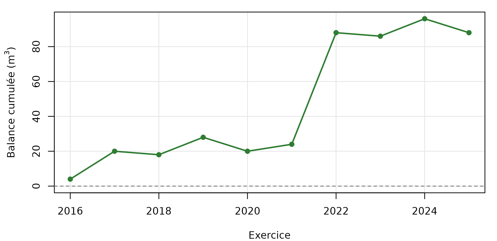
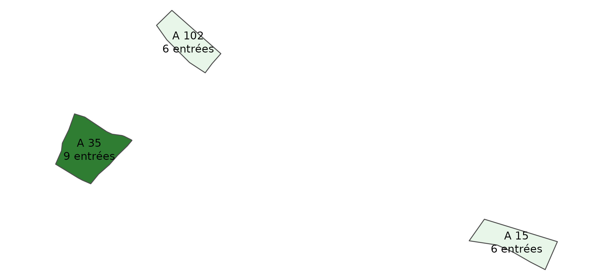

Gestion antérieure : du registre au document
Source:vignettes/articles/gestion-anterieure.Rmd
gestion-anterieure.RmdLe sommier n’est pas un document, c’est un registre. Ce que réclament
le plan simple de gestion, le document d’aménagement ou l’évaluation de
fin de contrat CT88, ce sont des documents — une section «
gestion antérieure », un bilan de l’aménagement précédent, une étape 5.
sommier_rapport_quarto() les engendre depuis les écritures,
plutôt que de les faire recopier à la main depuis des registres qu’on
tient déjà.
Cet article déroule ce rapport section par section, sur le jeu de démonstration de la forêt communale de Couchey : dix exercices, les neuf registres, trois parcelles cadastrales. Chaque bloc de code est celui que le modèle Quarto exécute — l’article montre les données qui alimentent le document, le modèle en fixe la mise en page.
Les écritures sont fictives. Couchey est une commune
réelle et la géométrie vient de la fixture cadastrale de
nemetonshiny, mais aucun volume, montant, date, coupe ou
visa de ce jeu ne provient de registres authentiques. Le nom de la forêt
porte la mention, et le rapport engendré l’affiche en tête.
Poser le jeu de démonstration
Le schéma se déploie sur une base vierge, puis
sommier_demo_couchey() l’emplit. Le registre étant
strictement append-only, la fonction refuse de s’exécuter sur
une base où le jeu figure déjà : on le retrouve alors plutôt que de
tenter de le recréer.
sommier_init_schema(con)
deja <- DBI::dbGetQuery(
con, "SELECT id FROM foret WHERE nom = $1", params = list(NOM_FORET_DEMO)
)
foret <- if (nrow(deja) > 0L) {
deja$id[[1L]]
} else {
sommier_demo_couchey(con)$foret_id
}Les trois parcelles ancrent le sommier sur un terrain réel :
tableau(
SOMMIER_PARCELLES_COUCHEY[, c("numero", "geo_parcelle", "surface_ha")],
"Les trois parcelles de la fixture Couchey"
)| numero | geo_parcelle | surface_ha |
|---|---|---|
| 54 | 21200000A0054 | 2.5 |
| 55 | 21200000A0055 | 1.8 |
| 56 | 21200000A0056 | 3.2 |
Un assemblage, trois présentations
sommier_gestion_anterieure() rassemble sur une période
ce que les trois référentiels réclament sous des noms différents. Il n’y
a pas trois extractions parallèles — elles
divergeraient à la première évolution — mais un seul assemblage dont
chaque référentiel ne reçoit que ce qu’il demande.
sections_de <- function(referentiel) {
names(sommier_gestion_anterieure(
con, foret, debut = "2016-01-01", fin = "2025-12-31",
referentiel = referentiel
)$sections)
}
toutes <- unique(unlist(lapply(SOMMIER_REFERENTIELS, sections_de)))
presence <- data.frame(section = toutes, stringsAsFactors = FALSE)
for (r in SOMMIER_REFERENTIELS) {
presence[[r]] <- ifelse(toutes %in% sections_de(r), "oui", "—")
}
tableau(presence, "Ce que chaque référentiel retient de l'assemblage")| section | psg | amenagement | ct88 |
|---|---|---|---|
| coupes | oui | oui | oui |
| balance | oui | oui | oui |
| travaux | oui | oui | oui |
| evenements | oui | oui | oui |
| equilibre_gibier | oui | oui | — |
| patrimoine | oui | oui | — |
| finances | — | oui | oui |
Le PSG n’emporte pas le détail financier, que le propriétaire n’a pas à produire au CRPF ; le CT88, tourné vers l’évaluation d’un contrat, n’emporte pas l’inventaire du patrimoine. Les registres 3 et 7 portant des données personnelles, restreindre la sortie évite d’en diffuser plus que nécessaire.
La suite de l’article prend le référentiel amenagement,
le plus complet.
ga <- sommier_gestion_anterieure(
con, foret,
debut = "2016-01-01", fin = "2025-12-31",
referentiel = "amenagement"
)
ga
#> <gestion anterieure - amenagement>
#> foret : Foret communale de Couchey (jeu de demonstration) (communal)
#> periode : 2016-01-01 a 2025-12-31
#> coupes : 11 ligne(s)
#> balance : 10 ligne(s)
#> travaux : 3 ligne(s)
#> evenements : 2 ligne(s)
#> finances : 5 ligne(s)
#> equilibre_gibier : 4 ligne(s)
#> patrimoine : 6 ligne(s)Identification
tableau(data.frame(
champ = c("Forêt", "Régime", "Surface", "Période", "Référentiel"),
valeur = c(
ga$foret, ga$regime,
if (is.na(ga$surface_ha)) "non renseignée" else paste(ga$surface_ha, "ha"),
paste(ga$debut, "au", ga$fin), ga$referentiel
),
stringsAsFactors = FALSE
))| champ | valeur |
|---|---|
| Forêt | Foret communale de Couchey (jeu de demonstration) |
| Régime | communal |
| Surface | 7.5 ha |
| Période | 2016-01-01 au 2025-12-31 |
| Référentiel | amenagement |
Intégrité du registre
Le sommier est un journal à chaînage de hachages : chaque entrée scelle la précédente. Le rapport porte l’état constaté à l’édition, empreinte de tête comprise — c’est elle qui permet, plus tard, de dire si le registre a bougé.
verif <- sommier_verifier(con, foret)
verif
#> Verification de chaine - sommier
#> foret : 33e147bb-e342-4e00-a333-a3cc098c09b2
#> entrees : 66
#> seq tete : 66
#> hash tete : 91ba43f4a3706da9afbcf33e467bc05c205b846f9d2733b10d7f840fef837a54
#> etat : chaine intacteCoupes et récoltes
Imprimés A50E, A50F et A50I.
tableau(ga$sections$coupes, "Coupes de la période, par exercice et nature")| exercice | type_entree | nature_coupe | volume_m3 | surface_ha | n |
|---|---|---|---|---|---|
| 2016 | martelage | reguliere | 40 | 1.8 | 1 |
| 2017 | martelage | sanitaire | 46 | 3.2 | 1 |
| 2018 | martelage | amelioration | 37 | 2.5 | 1 |
| 2019 | martelage | reguliere | 43 | 1.8 | 1 |
| 2020 | martelage | sanitaire | 34 | 3.2 | 1 |
| 2021 | martelage | amelioration | 40 | 2.5 | 1 |
| 2022 | martelage | reguliere | 46 | 1.8 | 1 |
| 2022 | produit_accidentel | chablis | 22 | 0.8 | 1 |
| 2023 | martelage | sanitaire | 37 | 3.2 | 1 |
| 2024 | martelage | amelioration | 43 | 2.5 | 1 |
| 2025 | martelage | reguliere | 34 | 1.8 | 1 |
Balance de possibilité
La balance confronte les volumes martelés à la possibilité de l’aménagement. Une balance positive signale un excès de prélèvement, une négative un déficit ; c’est le cumul qui compte sur la durée du plan.
tableau(ga$sections$balance, "Balance de possibilité (imprimé A50E)")| exercice | possibilite_m3_an | volume_martele_m3 | balance_exercice_m3 | balance_cumulee_m3 |
|---|---|---|---|---|
| 2016 | 38 | 40 | 2 | 2 |
| 2017 | 38 | 46 | 8 | 10 |
| 2018 | 38 | 37 | -1 | 9 |
| 2019 | 38 | 43 | 5 | 14 |
| 2020 | 38 | 34 | -4 | 10 |
| 2021 | 38 | 40 | 2 | 12 |
| 2022 | 38 | 68 | 30 | 42 |
| 2023 | 38 | 37 | -1 | 41 |
| 2024 | 38 | 43 | 5 | 46 |
| 2025 | 38 | 34 | -4 | 42 |
b <- ga$sections$balance
cumul <- as.numeric(b$balance_cumulee_m3)
op <- par(mar = c(4, 4.5, 1, 1), cex = 0.85)
# L'axe embrasse zero, sans quoi la ligne d'equilibre sortirait du cadre et la
# lecture perdrait son repere.
plot(b$exercice, cumul, type = "n", ylim = range(c(0, cumul), na.rm = TRUE),
xlab = "Exercice", ylab = expression("Balance cumulée ("*m^3*")"),
panel.first = grid(col = "grey90", lty = 1))
abline(h = 0, lty = 2, col = "grey40")
lines(b$exercice, cumul, lwd = 2, col = "#2E7D32")
points(b$exercice, cumul, pch = 19, col = "#2E7D32")
Balance cumulée — la ligne pointillée marque l’équilibre.
par(op)Travaux
Imprimés A50J, A50J bis et A50H. Le taux de reprise est celui relevé au contrôle des plantations.
tableau(ga$sections$travaux, "Travaux réalisés sur la période")| annee | nature_travaux | quantite | unite | montant_eur | taux_reprise_moyen_pct | n |
|---|---|---|---|---|---|---|
| 2022 | plantation | 0.80 | ha | 2 350 | 78 | 1 |
| 2023 | entretien de la desserte | 0.62 | km | 1 180 | NA | 1 |
| 2024 | degagement | 0.80 | ha | 640 | 84 | 1 |
Évènements marquants
Imprimé A50K. Le niveau de précision (NDP) vaut 0 pour un constat de terrain ; une valeur supérieure signale une observation issue de la télédétection, non encore validée sur place.
tableau(ga$sections$evenements, "Phénomènes intéressant la vie de la forêt")| date_evenement | nature | description | surface_ha | volume_impacte_m3 | ndp |
|---|---|---|---|---|---|
| 2020-08-10 | secheresse | Deficit hydrique estival, roussissement des cimes | 3.1 | NA | 0 |
| 2022-02-17 | tempete | Coup de vent du 17 fevrier | 0.8 | 22 | 0 |
Bilan financier
Imprimé A50G. Le solde est la différence entre recettes et dépenses de l’exercice ; le cumul en donne la tendance.
tableau(ga$sections$finances, "Recettes, dépenses et solde par exercice")| exercice | recettes_eur | depenses_eur | solde_eur | solde_cumule_eur |
|---|---|---|---|---|
| 2021 | 2 740 | 240 | 2 500 | 2 500 |
| 2022 | 2 900 | 2 590 | 310 | 2 810 |
| 2023 | 3 060 | 240 | 2 820 | 5 630 |
| 2024 | 3 220 | 240 | 2 980 | 8 610 |
| 2025 | 3 380 | 240 | 3 140 | 11 750 |
Le registre 7 porte aussi le budget prévisionnel, que le rapport de gestion antérieure ne reprend pas mais qui se lit en regard — un poste budgété et jamais exécuté est un écart, pas une absence.
tableau(
sommier_execution_budgetaire(con, foret, exercice = 2025),
"Exécution budgétaire de l'exercice 2025"
)| exercice | poste | prevu_eur | realise_eur | ecart_eur | execution_pct |
|---|---|---|---|---|---|
| 2025 | bois_delivres | 0 | 690 | 690 | NA |
| 2025 | bois_sur_pied | 2 000 | 2 380 | 380 | 119.0 |
| 2025 | chasse_peche | 300 | 310 | 10 | 103.3 |
| 2025 | equipement | 1 200 | 0 | -1 200 | 0.0 |
| 2025 | frais_garderie | 250 | 240 | -10 | 96.0 |
Équilibre forêt-gibier
Obligatoire dans les plans simples de gestion depuis la loi d’avenir pour l’agriculture, l’alimentation et la forêt du 13 octobre 2014.
tableau(ga$sections$equilibre_gibier, "Constats d'équilibre forêt-gibier")| saison | surface_sensible_ha | taux_abroutissement_pct | diagnostic |
|---|---|---|---|
| 2021-2022 | 1.4 | 31 | desequilibre_leger |
| 2022-2023 | 1.4 | 29 | desequilibre_leger |
| 2023-2024 | 1.4 | 27 | desequilibre_leger |
| 2024-2025 | 1.4 | 25 | desequilibre_leger |
Patrimoine remarquable
Série A50 r/*. Le patrimoine est un état courant : il n’est pas borné par la période du rapport, sans quoi un arbre inventorié plus tôt disparaîtrait de l’inventaire que le document veut voir tel qu’il est. Seul le dernier relevé de chaque sujet est retenu — le Chêne de la Justice, revisité en 2024, figure avec son état sanitaire d’alors.
tableau(ga$sections$patrimoine, "Arbres, peuplements, vestiges, espèces, habitats")| type_fiche | appellation | nom_latin | type_habitat | surface_ha | etat_sanitaire | statut_protection |
|---|---|---|---|---|---|---|
| arbre | Alisier de la lisiere sud | NA | NA | NA | bon | NA |
| arbre | Chandelle du talus est | NA | NA | NA | mort | NA |
| arbre | Chene de la Justice | NA | NA | NA | moyen | NA |
| espece | NA | Cypripedium calceolus | NA | NA | NA | Directive Habitats, annexe II |
| habitat | NA | NA | Pelouse calcicole seche | 0.6 | NA | NA |
| vestige | Charbonniere de la section A | NA | NA | NA | NA | NA |
Éléments utiles à l’IBP
Ce que le registre 9 apporte à l’Indice de Biodiversité Potentielle. Ce n’est pas une cotation : un facteur IBP se cote sur placette selon son protocole de terrain, par densité à l’hectare, pas par comptage d’un registre qui n’inventorie que le remarquable.
tableau(sommier_elements_ibp(con, foret), "Éléments mobilisables pour l'IBP")| facteur_ibp | element | valeur | unite | n_entrees |
|---|---|---|---|---|
| F - arbres a microhabitats | Arbres remarquables vivants au registre 9 | 2.0 | arbres | 3 |
| C - bois mort sur pied | Arbres remarquables releves morts sur pied | 1.0 | arbres | 3 |
| E - tres gros bois vivants | Arbres vivants de circonference >= 220 cm | 1.0 | arbres | 3 |
| G - milieux ouverts | Habitats remarquables au libelle evoquant un milieu ouvert | 0.6 | ha | 1 |
| contexte - especes protegees | Especes protegees inventoriees | 1.0 | especes | 1 |
Desserte
Imprimé A50D. Seule la voirie privée forestière entre dans la densité : une route publique traversant la forêt ne dit rien de sa desserte.
tableau(sommier_densite_voirie(con, foret), "Longueurs et densités de voirie")| revetement | longueur_km | densite_km_100ha |
|---|---|---|
| empierree | 0.62 | 8.27 |
| terrain_naturel | 0.34 | 4.53 |
| total | 0.96 | 12.80 |
Ce que la carte porte
Le rapport n’est plus seulement tabulaire : trois de ses chapitres
portent une carte. Elles ne viennent pas d’un fond externe — elles
sortent du sommier lui-même, qui sait déjà où les
choses se passent : chaque entrée porte un ug_uuid, chaque
unité de gestion un contour daté.
sommier_couche_ug() rassemble ce qu’il faut pour les
dessiner : les contours et, pour chaque unité, ce que la période y a
inscrit.
couche_carte <- sommier_couche_ug(con, foret, "2016-01-01", "2025-12-31")
tableau(
couche_carte[, c("numero_affichage", "surface_ha", "n_entrees",
"volume_martele_m3", "montant_travaux_eur")],
"Ce que chaque unité porte sur la période"
)| numero_affichage | surface_ha | n_entrees | volume_martele_m3 | montant_travaux_eur |
|---|---|---|---|---|
| 54 | 3.36 | 6 | 120 | 0 |
| 55 | 3.36 | 9 | 185 | 2 990 |
| 56 | 3.36 | 6 | 117 | 0 |
Trois détails de ce tableau valent qu’on s’y arrête, parce qu’ils décident de ce que la carte dit.
Une unité sans écriture vaut zéro, pas rien. La
parcelle 54 n’a fait l’objet d’aucuns travaux : elle figure à
0 €, et sur la carte elle se teinte. Une unité où rien n’a
été fait n’est pas une unité dont on ignore ce qui s’y est fait, et une
carte qui les confondrait mentirait sur ce qu’elle montre.
Le volume martelé n’est pas le volume récolté. Une coupe est d’abord martelée (A50E) puis exploitée (A50F) ; les compter toutes deux doublerait le prélèvement. La carte reprend donc la même convention que la balance de possibilité, sans quoi les deux se contrediraient dans le même document.
Les écritures hors unité de gestion ne sont sur aucune carte. L’entretien de la desserte de 2023, imprimé A50H, n’est rattaché à aucune parcelle : il compte dans le tableau des travaux, jamais dans le total cartographié.
Le contour a une date
ug_geometrie est versionnée : le contour d’une unité
change avec les révisions d’aménagement. Un bilan de période doit donc
montrer le parcellaire de cette période, et non celui
du jour où le document est édité — c’est pourquoi
sommier_couche_ug() prend par défaut la borne de fin, non
Sys.Date().
identical(
sommier_geometrie_ug(con, foret, a_la_date = "2020-06-30")$wkt,
sommier_geometrie_ug(con, foret, a_la_date = "2025-12-31")$wkt
)
#> [1] TRUESur le jeu de démonstration, les contours n’ont pas bougé depuis 2016 : les deux dates rendent la même géométrie. Sur une forêt réelle passée par une révision, elles diffèrent — et c’est la date, pas la base, qui décide.
Ce que la carte omet
Une unité dont le contour est inconnu ne peut pas être dessinée. Elle n’est pas pour autant escamotée : la couche la nomme, et le rapport la cite sous sa première carte.
attr(couche_carte, "unites_sans_geometrie")
#> character(0)Vide ici, puisque les trois parcelles ont leur contour. Sur une forêt partiellement cartographiée, ce vecteur porte les numéros manquants — et le document le dit au lecteur, faute de quoi la carte laisserait croire qu’elle montre tout.
Ce que les registres localisent eux-mêmes
Jusqu’ici la carte s’arrêtait à l’unité de gestion. Depuis la v0.7.0, une entrée peut porter sa propre géométrie — et pas n’importe où : dans le payload, donc dans l’empreinte.
objets <- sommier_objets_localises(con, foret)
tableau(
objets[, c("registre", "date_evenement", "designation", "type_geometrie")],
"Les entrées que le sommier sait placer sur une carte"
)| registre | date_evenement | designation | type_geometrie |
|---|---|---|---|
| 2 | 2017-09-14 | Refection de la limite nord de la section A | ST_LineString |
| 4 | 2016-06-01 | Chemin de la section A | ST_LineString |
| 4 | 2016-06-01 | PD-01 | ST_Point |
| 4 | 2016-06-01 | Piste de desserte est | ST_LineString |
| 8 | 2020-08-10 | secheresse | ST_Polygon |
| 8 | 2022-02-17 | tempete | ST_Polygon |
| 9 | 2016-07-12 | Chene de la Justice | ST_Point |
| 9 | 2018-10-04 | Charbonniere de la section A | ST_Point |
| 9 | 2019-06-03 | Pelouse calcicole seche | ST_Polygon |
| 9 | 2021-05-28 | Sabot de Venus | ST_Point |
| 9 | 2022-09-15 | Alisier de la lisiere sud | ST_Point |
| 9 | 2023-05-22 | Chandelle du talus est | ST_Point |
| 9 | 2024-07-09 | Chene de la Justice | ST_Point |
C’est la conséquence qui compte : le contour d’une coupe devient aussi opposable que son volume, la position d’une borne aussi opposable que la date de son implantation. Rien de tout cela n’est un attribut d’affichage rangé à côté du registre.
# La même écriture, avec et sans contour, ne donne pas la même empreinte.
sans <- registre5_coupe("martelage", 2026, "amelioration", volume_m3 = 100)
avec <- registre5_coupe("martelage", 2026, "amelioration", volume_m3 = 100,
geometrie = geom_polygone(rbind(
c(4.950, 47.270), c(4.952, 47.270), c(4.952, 47.272)
)))
identical(jcs(sans), jcs(avec))
#> [1] FALSEDeux règles rendent cela praticable.
Le WGS84, sans exception. La RFC 7946 l’impose, et un payload doit s’interpréter sans contexte extérieur : une coordonnée Lambert-93 nue n’aurait de sens que pour qui connaît la convention du producteur. Des coordonnées projetées passées telles quelles sont donc refusées à la saisie.
geom_point(847490, 6687454) # du Lambert-93 pris pour des degrés
#> Error:
#> ! `longitude` doit etre <= 180, recu : 847490.L’arrondi au centimètre. Sept décimales de degré ; au-delà, deux relevés du même point différeraient sur du bruit d’instrument, et le chaînage cesserait d’être reproductible. Arrondir n’est pas simplifier : aucun sommet n’est retiré, on cesse seulement d’afficher une précision que la mesure n’a pas.
identical(
jcs(geom_point(4.95123456789, 47.27123456789)),
jcs(geom_point(4.95123456123, 47.27123456999))
)
#> [1] TRUELa géométrie reste facultative : un gestionnaire sans relevé continue de saisir sans, et son sommier reste conforme. La rendre obligatoire fermerait le registre à ceux qu’il doit servir.
Le cadastre, décor et non écriture
Une carte de la forêt seule flotte : le lecteur ne sait pas où elle se situe. Le parcellaire cadastral donne ce repère — et c’est tout ce qu’il donne.
fond <- sommier_fond_lire(
sommier_fond_cadastral("21200"), # Couchey
emprise = sommier_couche_ug(con, foret)
)
sommier_rapport_quarto(con, foret, "gestion-anterieure.html", fond = fond)Trois refus le tiennent à sa place.
Rien n’entre dans le registre. Aucune entrée, aucune empreinte, aucun manifeste : verser le cadastre dans le sommier ferait passer la donnée d’un tiers pour un constat du gestionnaire, ce que le registre existe précisément pour empêcher. Le fond est daté, sourcé, et sa perte n’affecte rien.
Rien ne se télécharge tout seul. Ni le rapport ni un export ne déclenchent d’appel réseau ; c’est l’appelant qui va chercher le fond, une fois, et le passe en argument. Un document de gestion doit pouvoir s’engendrer sur un poste hors ligne — et le même rapport rejoué des mois plus tard ne doit pas changer de fond sans le dire.
Le cadastre ne porte pas ce qu’on lui prête. Les livraisons publiques exposent les parcelles, les sections, les bâtiments et les lieux-dits :
SOMMIER_COUCHES_CADASTRE
#> [1] "parcelles" "sections" "batiments" "lieux_dits" "feuilles"Ni bornes, ni fossés. Ceux-là existent bien — dans la forme EDIGEO du
Plan Cadastral Informatisé, publiée sur le même site sous
dgfip-pci-vecteur, mais par feuille cadastrale et dans un
format qui demande le pilote EDIGEO de GDAL. Hors de portée de ce paquet
aujourd’hui, donc, et non hors d’atteinte.
Et quand bien même on irait les chercher, une borne relevée par la DGFiP reste la donnée d’un tiers. Ce qui fait foi dans un sommier, c’est le constat du gestionnaire — registres 2 et 4, saisi avec sa géométrie et chaîné avec le reste. C’est une vérification et non une supposition : elle a été faite avant d’écrire une ligne de fond cadastral, et elle a déplacé la frontière entre ce que le sommier constate et ce qu’il emprunte.
Les bornes, elles, sont ailleurs
Le paragraphe ci-dessus disait vrai des livraisons GeoJSON. Il ne disait pas tout : les bornes et les détails topographiques existent, dans le PCI vecteur brut au format EDIGÉO, publié feuille par feuille sur le même site.
feuilles <- sommier_feuilles_pci("21200", emprise = couche_carte)
fond_pci <- sommier_fond_pci_lire(
sommier_fond_pci("21200", feuilles$feuille), "bornes"
)Couchey compte dix-sept feuilles ; l’emprise de la forêt en retient deux. C’est ce qui rend le lot praticable : on ne télécharge pas une commune pour regarder trois parcelles. Les feuilles se choisissent sur la couche légère d’Etalab, dont les identifiants correspondent exactement aux noms des archives EDIGÉO — ce que l’archive, elle, ne dit qu’une fois décompressée.
Deux refus gouvernent la lecture.
La nature d’un détail n’est pas devinée. EDIGÉO est
auto-descripteur : le .DIC définit objets, attributs et
relations, le .SCD dit quelle classe porte quels attributs,
et GDAL s’en sert pour bâtir les couches et leurs champs — c’est ainsi
qu’on récupère SYM sans parser le dictionnaire soi-même.
Mais la structure n’est pas la sémantique : sur la feuille examinée,
toutes les définitions du .DIC sont vides et aucune section
n’énumère les valeurs. SYM distingue mur, fossé, haie et
clôture ; sa nomenclature appartient à la symbolisation du plan, publiée
ailleurs. Le code sort donc brut, et la table de correspondance vous
appartient — le paquet n’en embarque aucune tant qu’une source n’est pas
citable. Une correspondance plausible mais fausse ferait dire au
document « fossé » là où le terrain montre un mur.
La projection vient de ce que le lot déclare. Le
.GEO porte le référentiel employé —
RELSA06:LAMB93 sur nos feuilles, CC42 à
CC50 pour les livraisons edigeo-cc. C’est lui
qu’on lit, plutôt que de reconnaître la chaîne proj4 que le pilote
reconstruit sans code EPSG : la déclaration est l’intention du
producteur, le proj4 n’en est qu’une traduction. Les lots en conique
conforme sont donc lisibles et ramenés en Lambert-93 ; un référentiel
absent ou inconnu est refusé, jamais deviné — le défaut même qu’on a
corrigé en v0.6.0 sur l’export GeoJSON.
Une remarque, sur ce jeu de démonstration : les bornes réelles de Couchey ne tombent pas dans les trois parcelles, dont la géométrie est inventée. La carte de la desserte n’en montre donc aucune, et le rapport le dit plutôt que d’élargir l’emprise jusqu’à en attraper. Sur une forêt réelle, elles seraient là.
Et cela ne change rien à la règle : une borne relevée par la DGFiP reste la donnée d’un tiers. Le bornage qui fait foi est celui du gestionnaire, au registre 2, avec sa géométrie et son empreinte.
Les unités de gestion sur le terrain
Le même sommier s’exporte en couche SIG : les unités de gestion en
vigueur à une date, enrichies du nombre d’entrées qui s’y rattachent. Le
GeoJSON n’exige rien de plus que PostGIS et s’ouvre sans rien installer
; le GeoPackage passe par sf.
couche <- tempfile(fileext = ".geojson")
export <- sommier_exporter_sig(con, foret, couche, format = "geojson")
str(export)
#> List of 3
#> $ chemin : chr "/tmp/RtmpNm4QPV/file336063f144b0.geojson"
#> $ n_unites : int 3
#> $ unites_sans_geometrie: chr(0)
ug <- sf::read_sf(couche)
teintes <- grDevices::colorRampPalette(c("#E8F5E9", "#2E7D32"))(5)
op <- par(mar = c(0, 0, 0, 0))
plot(sf::st_geometry(ug),
col = teintes[cut(ug$n_entrees, breaks = 5, labels = FALSE)],
border = "grey30")
text(sf::st_coordinates(sf::st_centroid(sf::st_geometry(ug))),
labels = paste0("A ", ug$numero_affichage, "\n", ug$n_entrees, " entrées"),
cex = 0.75)
Les trois parcelles du jeu de démonstration, teintées par nombre d’entrées.
par(op)Le GeoJSON sort en WGS84, comme l’exige la RFC 7946 : le format ne déclare pas sa projection, et tout lecteur la suppose. Le GeoPackage, lui, écrit son système dans le fichier et reste en Lambert-93, où les longueurs et les surfaces se mesurent en mètres.
Une unité sans géométrie connue est omise de la couche mais
signalée dans unites_sans_geometrie : la
faire figurer sans contour créerait une entité fantôme, l’omettre en
silence laisserait croire la forêt entièrement cartographiée.
Le document Quarto
Tout ce qui précède, sommier_rapport_quarto() le
rassemble et le rend en un document autoportant, HTML ou PDF :
sommier_rapport_quarto(
con, foret, "gestion-anterieure.html",
debut = "2016-01-01", fin = "2025-12-31", referentiel = "amenagement"
)Les données sont extraites de la base avant le rendu et déposées dans un RDS que le document lit. Deux conséquences voulues : aucun identifiant de connexion ne circule dans le document ou ses paramètres, et le rendu est reproductible à l’identique sans accès à la base — on rejoue un rapport des mois plus tard sur le même instantané.
Vérifier ce document
Le rapport est une mise en forme, pas la preuve. La valeur probante tient au registre : l’empreinte de tête donnée plus haut scelle toutes les entrées de la chaîne. Ce qui se transporte, c’est le manifeste — chaîne, visas et horodatages — vérifiable hors ligne, sans base et sans le paquet qui l’a produit.
chemin <- tempfile(fileext = ".json")
sommier_exporter_manifeste(con, foret, chemin)
sommier_verifier_manifeste(chemin)
#> Verification de chaine - sommier
#> foret : 33e147bb-e342-4e00-a333-a3cc098c09b2
#> entrees : 66
#> seq tete : 66
#> hash tete : 91ba43f4a3706da9afbcf33e467bc05c205b846f9d2733b10d7f840fef837a54
#> etat : chaine intacte
#> reserve : revocation des certificats non verifiee : CRL et OCSP demandent le reseauToute entrée modifiée, retirée ou insérée après coup invalide l’empreinte de tête, et la vérification le dit — y compris chez le destinataire, qui n’a besoin ni de la base ni de la confiance de l’émetteur.
Rejouer cet article
L’article se construit contre une base PostGIS jetable, décrite par
les mêmes variables d’environnement que la suite de tests
(SOMMIER_ARTICLE_* d’abord, SOMMIER_TEST_* en
repli) :
docker run -d --name sommier-pg -p 5432:5432 \
-e POSTGRES_PASSWORD=postgres -e POSTGRES_DB=sommier_article \
postgis/postgis:16-3.4
SOMMIER_ARTICLE_DB=sommier_article \
SOMMIER_ARTICLE_USER=postgres \
SOMMIER_ARTICLE_PASSWORD=postgres \
Rscript -e 'pkgdown::build_article("gestion-anterieure")'Sans base joignable, l’article se rend quand même : le code reste lisible, les tableaux manquent, et l’avertissement en tête le dit. Un site qui se construit n’est pas la preuve que les chiffres ont été calculés.